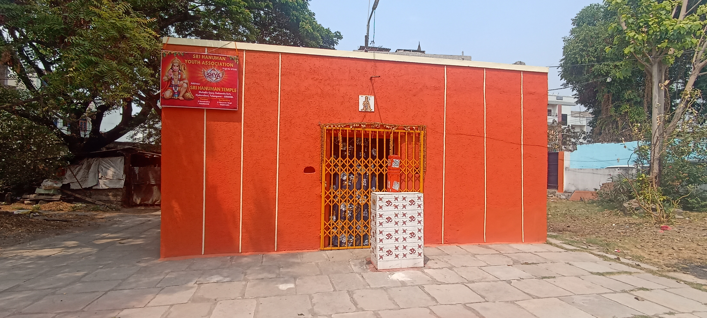
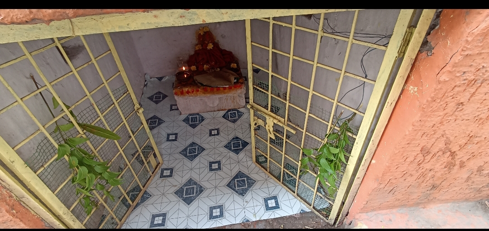
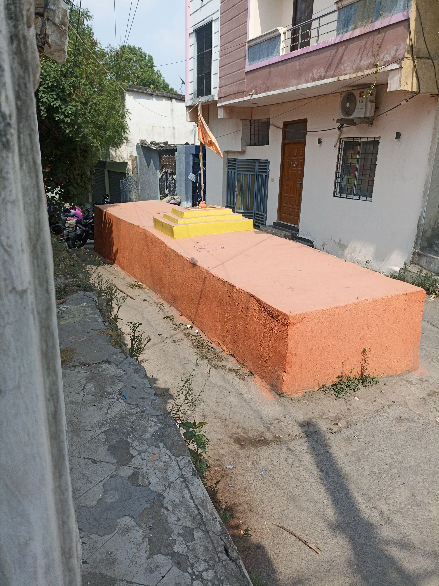

श्री राम जय राम जय जय राम
Sri Hanuman Temple
జై శ్రీ హనుమాన్ • జై శ్రీ రామ్
A spiritual sanctuary preserving Telangana traditions, devotion, and community service. One of the ancient Sri Hanuman Temple and Seven Temples (Edu Gudulu) of the historic Golconda Fort.

A Place of Faith
& Community
Sri Hanuman Temple at Mohalla Gunj, Golconda Fort, is believed to be one of the ancient in Golconda region, with deep roots in Kakatiya dynasty heritage.
Managed by Sri Hanuman Youth Association (SHYA), the temple stands as a beacon of devotion, cultural preservation, and community service.
Our Grand Festivals
Celebrating Telangana's vibrant spiritual traditions year-round

Bonalu Mahotsavam
బోనాలు మహోత్సవం
Most celebrated Telangana festival. Bonalu Thottelu stop here before the grand Golconda procession. Potharaju performers offer prayers to Ammavaru.

Hanuman Jayanti
హనుమాన్ జయంతి
Grand birth anniversary celebrations with special Abhishekam, 108 Hanuman Chalisa recitals, and Annadanam.

Bathukamma
బతుకమ్మ బతుకమ్మ ఉయ్యాలో
Telangana's beloved floral festival celebrating Ammavaru with magnificent flower stacks, devotional songs and vibrant cultural dances.

Durga Mata Festival
దుర్గా నవరాత్రి
Nine nights of devotion with elaborate pandal decorations, Kumkum Poojas, and grand Vijayadasami celebrations.

Maha Shivaratri
మహా శివరాత్రి
All-night vigil with Rudrabhishekam, Rudra Patha recitals, and thousands of devotees observing the sacred fast.

Holi
హోళీ పండుగ
Joyful festival of colors with traditional Holika Dahan ceremony and vibrant community celebrations.
Annadanam
Food for All
Every day, Sri Hanuman Temple serves free meals to hundreds of devotees, pilgrims, and the underprivileged — embodying the highest form of community service blessed by Lord Hanuman.
About Sri Hanuman Temple
A timeless beacon of devotion in the heart of historic Golconda

Temple History
Sri Hanuman Temple at Mohalla Gunj, Golconda Fort is a sacred institution with roots tracing to the Kakatiya dynasty era. Believed to be one of the ancient Seven Temples (Edu Gudulu) of the Golconda region.
Formally registered under Sri Hanuman Youth Association (SHYA), Regd. No: 873/82, ensuring continuous service to the community of Hyderabad.
Spiritual Significance
During the annual Bonalu festival, this temple serves as a pivotal stop for the sacred processions heading toward Golconda Fort — a tradition continuing unbroken for centuries.
Heritage Timeline
Temple Architecture & Traditions
Kakatiya Architecture
Traditional Telangana temple design with ornate pillars reflecting Kakatiya heritage.
Hanuman Deity
Lord Hanuman in divine Anjaneya form with daily poojas and abhishekam rituals.
Sacred Sanctum
The Garbhagriha radiates spiritual energy through ancient Vedic traditions.
Musical Traditions
Daily bhajans and devotional chanting preserve the temple’s spiritual atmosphere.
Floral Offerings
Traditional flower decorations using jasmine, marigold and lotus flowers.
Prasadam
Sacred prasadam prepared with devotion and served to all devotees as blessings.
Sri Hanuman Youth Association (SHYA)
Regd. No: 873/82 | Serving the Community Since 1982
Festival Management
Organizing annual temple festivals and spiritual celebrations for devotees.
Annadanam
Providing free meals and prasadam for devotees and visitors on Festival Days.
Volunteer Network
Dedicated volunteers supporting temple services with devotion and discipline.
Digital Outreach
Connecting devotees worldwide through online updates and live events.
Temple Maintenance
Maintaining cleanliness and sacredness across temple premises daily.
Community Service
Supporting social welfare activities and community development programs.
The Sacred Seven Temples
గోల్కొండ పవిత్ర ఏడుగుడులు
गोलकोंडा के पवित्र सात मंदिर
Sri Hanuman Temple is believed to be one of the oldest and most spiritually significant temples among the ancient Seven Temples (Edu Gudulu) of the Golconda region — deeply connected to Telangana traditions, Kakatiya dynasty heritage, and Bonalu processions.

Sri Hanuman Temple (Main)
శ్రీ హనుమాన్ మందిరం
The presiding temple of this sacred circuit, home to divine Anjaneya, gateway of Bonalu processions since ancient times.

Heritage Temple Site
One of the ancient spiritual heritage locations connected to the sacred Seven Temples tradition of Golconda.

Ammavaru Shrine
అమ్మవారి మందిరం
Dedicated to Ammavaru, the sacred destination of the grand Bonalu processions from across the region.
Bonalu Heritage

Sacred Bonalu Processions
పోతరాజు అమ్మవారి తమ్ముడు
During the sacred Bonalu celebrations, Sri Hanuman Temple becomes the epicenter of Telangana's most beloved festival. Bonalu Thottelu (procession pots) carried by devotees make a ceremonial stop here before continuing to Golconda Fort.
- Bonalu Thottelu ceremonially stop at this temple
- Potharaju performers offer sacred prayers to Ammavaru
- Devotees receive Ammavaru blessings before Golconda
- Grand processions continue the ancient devotional route
- Ritual has existed unbroken since the Kakatiya era
Potharaju — Divine Protector
The Sacred Protector
పోతరాజు అమ్మవారి తమ్ముడు
Potharaju, the brother of Ammavaru, is the fierce devoted protector of Bonalu processions. With red attire, sacred neem whip, and powerful presence, he leads processions to ward off evil and clear the path for the Goddess.
Ritual Significance
భక్తి మార్గమే మోక్ష మార్గం
During Bonalu at Sri Hanuman Temple, Potharaju performers undergo spiritual trance, embodying the divine protector's energy. Their sacred dances mark one of the most emotionally charged moments of the festival, drawing thousands of devotees.
Bathukamma Festival
The Floral Festival
తెలంగాణ సంస్కృతి పుష్ప ఉత్సవం
Bathukamma is Telangana's most distinctive festival — a celebration of life, nature, and Goddess Gauri. Women create magnificent flower stacks using seasonal flowers arranged in concentric layers, singing traditional songs in a breathtaking cultural spectacle.
At Sri Hanuman Temple
మన మందిరంలో బతుకమ్మ
Sri Hanuman Temple hosts vibrant Bathukamma celebrations where hundreds of women gather in traditional Telangana attire, sing devotional songs, perform cultural dances, and finally immerse the flower stacks — symbolizing Ammavaru's return to her divine abode.
Our 11 Grand Festivals
Celebrating the divine year-round with devotion and heritage
Bonalu Mahotsavam
బోనాలు మహోత్సవం
The grandest festival of Sri Hanuman Temple. Thousands carry sacred pots on their heads to offer to Ammavaru. Our temple is a key stop in the ancient Bonalu procession route toward Golconda Fort.
Festival Highlights
Hanuman Jayanti
హనుమాన్ జయంతి
Grand celebrations marking Lord Hanuman's birth anniversary. Special Abhishekam at dawn, 108 Hanuman Chalisa recitals, and massive Annadanam for thousands of devotees from across Hyderabad.
Festival Highlights
Bathukamma Festival
బతుకమ్మ పండుగ
Telangana's beloved floral festival celebrating Goddess Gauri. Women create magnificent flower stacks, sing devotional songs, and immerse the Bathukamma in water — a breathtaking display of culture.
Festival Highlights
Durga Mata Festival
దుర్గా నవరాత్రి
Nine nights of devotion to Goddess Durga with elaborate pandal decorations, Kumkum Poojas, and grand Vijayadasami celebrations marking the triumph of good over evil.
Festival Highlights
Maha Shivaratri
మహా శివరాత్రి
The great night of Lord Shiva celebrated with all-night devotional vigil. Rudrabhishekam with 11 sacred offerings. Rudra Patha recitals echo through the night as thousands observe the sacred fast.
Festival Highlights
Holi Celebrations
హోళీ పండుగ
Festival of colors with traditional Holika Dahan the night before, followed by vibrant community color celebrations, devotional songs, and the triumph of good over evil.
Festival Highlights
Bhogi Festival
భోగి పండుగ

First day of Sankranti season. Bhogi marks new beginnings by burning old items in a sacred bonfire. A spiritual cleansing welcoming the harvest season and new year blessings.
Festival Highlights
Sankranti
సంక్రాంతి పండుగ

The harvest festival celebrating the sun's northward journey. Kite flying, Gobbemmalu traditions, Haridas wandering, and Muggulu decorations mark this joyful celebration.
Festival Highlights
Nagula Panchami
నాగుల పంచమి

Auspicious festival dedicated to Naga Devata (Serpent God). Devotees offer milk, turmeric, and flowers seeking protection, fertility, and family prosperity through ancient Telangana traditions.
Festival Highlights
Saturday Special Pooja
శనివారం విశేష పూజ
Every Saturday — especially auspicious for Lord Hanuman — the temple conducts extended special poojas. Devotees queue from early morning for darshan, Abhishekam, and prasadam.
Festival Highlights
Ganesh Chaturthi
గణేశ చతుర్థి

The beloved 10-day festival of Lord Ganesha with elaborate pandal decorations, daily Aarti, cultural programs, and a grand visarjan procession through Mohalla Gunj, Golconda.
Festival Highlights
Daily Pooja Schedule
Every day the temple resonates with divine vibrations through timeless rituals
Morning Poojas
Evening Poojas
⭐ Saturday Special Programme
Every Saturday: 1000 Hanuman Chalisa recitation, extended Abhishekam, and grand Annadanam for all devotees. Arrive by 6 AM for darshan.
🙏 Sponsor Saturday PoojaTemple Gallery
Glimpses of devotion, heritage, and community


Live Darshan
Take blessings of Lord Hanuman from anywhere in the world
Live Temple Broadcast
Experience Sri Hanuman Temple live through our YouTube channel. Watch daily Abhishekam, Aarti, Bhajans, and festival celebrations from Golconda Fort, Hyderabad.
Morning Abhishekam
Live at 6:00 AM daily
Evening Harathi
Live at 7:00 PM — most divine moment
Festival Live
All major festivals broadcast live
Bhajan Nights
Friday & Saturday streaming live
Annadanam Programme
"अन्नं परब्रह्म स्वरूपं" — Food is the form of the Supreme Divine
Feeding the Divine in Every Being
Every single day, devotees, pilgrims, laborers, and the underprivileged are served nutritious, lovingly prepared meals as an act of worship — treating each meal as Prasadam blessed by Lord Hanuman.
The program runs through generous sponsorships from devotees worldwide who contribute on birthdays, anniversaries, and auspicious occasions seeking divine blessings.
Make a Donation
Your contribution sustains our sacred mission — every donation is blessed
Donation Form

Contact Us
Visit us at Golconda Fort — we welcome all devotees with open arms
Temple Address
Sri Hanuman Temple, Mohalla Gunj,
Golconda Fort, Hyderabad,
Telangana – 500008, India